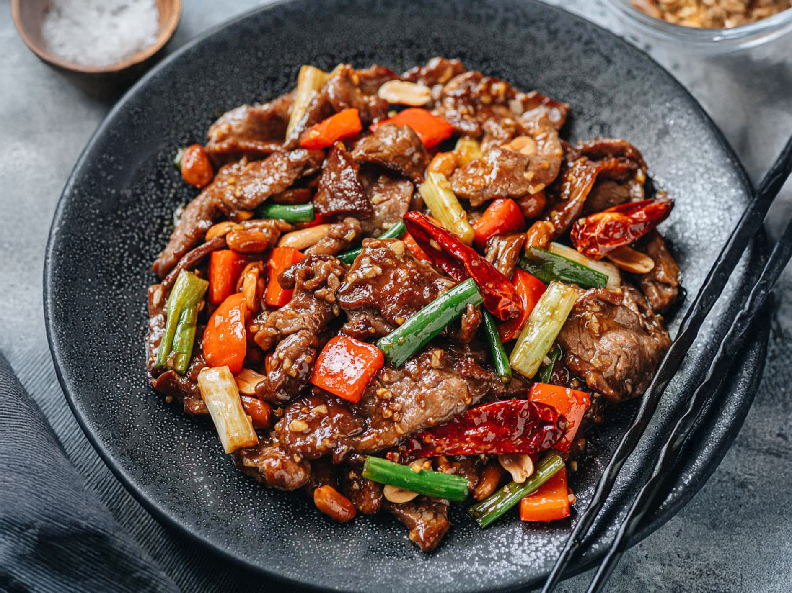

Flankstek med röd sås och ris
- 450 g flankstek, putsad på fett
- 2 matskedar Shaoxing risvin eller torr sherry
- 1 matsked soja
- 2½ teskedar majsstärkelse
- ½ tesked strösocker
- 2 matskedar låg-natrium kycklingbuljong eller vatten
- 2 matskedar osötad risvinäger
- 2 teskedar rostade sesamolja
- 3 matskedar neutral olja
- Kosher-salt och nymalen svartpeppar
- 1 matsked finhackad eller riven färsk ingefära
- 1 matsked finhackad eller riven vitlök
- 450 g plommontomater, urkärnade, halverade på längden, urkärnade och sedan halverade på tvären
- 1 medelstor gul lök, halverad från topp till botten och skivad på längden
Skär flanksteken mot fiberriktningen i ½-tums skivor och dela varje remsa i tredjedelar. I en medelstor skål, blanda 1 matsked risvin, sojasås, 2 teskedar majsstärkelse och socker, vispa ihop. Tillsätt köttet, blanda väl och låt vila i rumstemperatur i 15-20 minuter. I en separat skål, blanda resten av risvinet, ½ tesked majsstärkelse, kycklingbuljong, risvinäger, och sesamolja. Rör om och ställ åt sidan. Hetta upp 1 matsked olja i en stor stekpanna på hög värme. Tillsätt köttet i ett lager och låt det bryna ostört i ca 1 minut. Vänd och stek vidare i ca 1 minut till. Ta upp köttet och upprepa med resterande olja och kött. Sänk värmen till medelhög och tillsätt löken, stek tills den är mjuk, ca 1½ minut. Tillsätt ingefära-vitlöksblandningen och stek under omrörning tills det doftar, ca 30 sekunder. Tillsätt tomaterna och låt koka tills de mjuknar, ca 1 minut. Rör ner ketchupblandningen, låt koka upp och sedan tjockna, ca 45 sekunder. Lägg tillbaka köttet i pannan, rör om och låt det värmas i såsen. Servera omedelbart.
